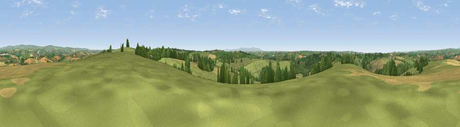

Viewpoint near Kings Nympton
#9671 in England · top 13% of its area beats it · near Kings NymptonWhere it is
The exact computed spot (SS 68525 21325). Click the marker for map links.
The view, rendered

A 360° render of this exact spot computed from the terrain model, tree cover and land cover — summer colours, afternoon light, calibrated against photographs of famous viewpoints. Real trees, hedges and buildings will differ in detail.
The panorama
Grey silhouette: terrain skyline in each direction (720 bearings, Earth curvature and refraction included). Dashed green: skyline with trees (+15 m) and buildings (+8 m) as obstacles. Blue strip: how far the ground is visible on each bearing.
Where the view opens
Wedge length = distance to the farthest visible ground on that bearing (vegetation-aware). Rings at 10, 25 and 50 km.
What fills the view
66% grassland · 17% woodland · 16% cropland ·
Angular shares of the visible panorama (visual magnitude), not map area. Landscape diversity 0.40 (0–1 Shannon).
Key numbers
More beautiful places nearby
The staircase of upgrades: each row has a higher view potential than everything closer. Driving times are estimates from straight-line distance, calibrated against real road routing — check an actual route before setting out.
| Place | Direction | Drive | Score |
|---|---|---|---|
| Viewpoint near George Nympton | E · 1 km | ~3 min | 65.8 |
| Viewpoint near Burrington | WSW · 6 km | ~13 min | 66.4 |
| Viewpoint near Stags Head | N · 8 km | ~15 min | 68.1 |
| Yollacombe Hill | NNW · 9 km | ~18 min | 70.2 |
| Viewpoint near Landkey | NW · 12 km | ~23 min | 74.0 |
| Codden Hill | NW · 13 km | ~24 min | 81.3 |
| Viewpoint near Martinhoe | NNW · 27 km | ~43 min | 86.5 |
| Holdstone Hill | NNW · 27 km | ~43 min | 90.2 |
50.97628, -3.87411 · source: screening · position refined by local search. Computed location — check access rights before visiting.